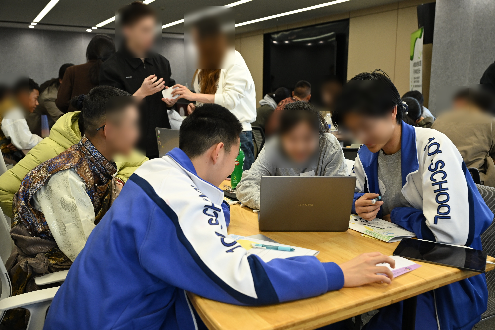
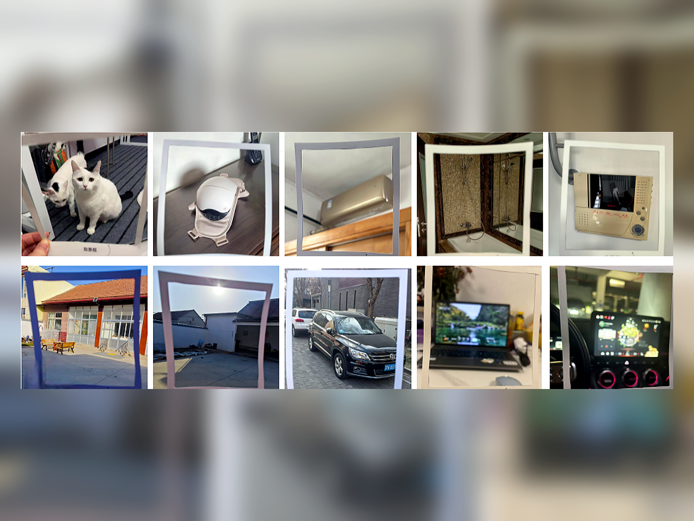
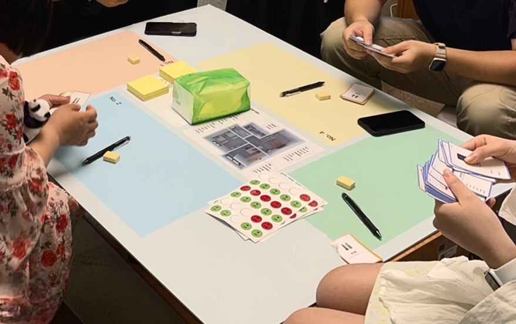

I study how people can critically imagine and responsibly shape emerging AI technologies.
About me
I am Xiao XUE, a design researcher working across Human-Computer Interaction, responsible AI, and Research through Design. My background connects undergraduate training in deep learning with master's-level work in design informatics, which has shaped how I move between technical systems and design inquiry.
I am currently a research intern at The Future Laboratory, Tsinghua University. My work uses participatory and designerly methods to ask how everyday people, especially non-expert publics, as well as communities marginalized or overlooked in dominant technological narratives, can question, adapt, and co-shape emerging technologies before they become settled parts of social life.
I am applying for PhD positions where I can further develop empirical and design-led approaches to dark patterns, meaning-making, and responsible AI interventions.
Research
My research is grounded in the belief that design can make technological futures discussable before they become settled infrastructure. I work with emerging systems such as large language models, smart homes, autonomous vehicles, and AI-enabled safeguarding, studying how they redistribute agency, care, responsibility, and power in everyday contexts.
I am especially interested in how responsible AI can be approached as a design research problem: not only through principles or technical metrics, but through situated methods that help people articulate concerns, imagine alternatives, and challenge solutionist narratives. In this work, I am also interested in how people identify and make sense of AI-related dark patterns, and how bottom-up design methods can work with affected communities to surface concerns, build agency, and imagine reparative responses.
To examine these questions, I combine design research with empirical and technical approaches, including Research through Design, participatory design, system prototyping, experiments, and qualitative analysis. Across these methods, I study how people encounter, interpret, and respond to emerging AI systems in situated contexts.
Selected work

When AI Becomes a Group ResourceStudying how unequal AI literacy shapes participation in collaborative learning.
 Designability of LLMs
Designability of LLMs
Understanding how everyday LLM use becomes a form of ongoing design.

When My Car Whispers Secrets to My HomeExploring human-vehicle-home ecosystems through speculative probes.
Hear Us, then Protect UsDesigning with older adults against deepfake scams.

Who Should Hold Control?Rethinking empowerment and control among cohabitants in home automation.
Publications
Full Papers
Hear Us, then Protect Us: Navigating Deepfake Scams and Safeguard Interventions with Older Adults through Participatory Design.
Yuxiang Zhai, Xiao Xue, Zekai Guo, Tongtong Jin, Yuting Diao, and Jihong Jeung. 2025. CHI Conference on Human Factors in Computing Systems Proceedings (CHI 2025).A Card-based Co-Design Toolkit for Exploring Smart Material Applications with Multiple Stakeholders: A Case Study on Automotive Interior Design.
Tianyu Yu, Xuezhu Wang, Yao Lu, Kejin Yu, Xiwen Yao, Wenjing Deng, Zhiyu Li, Xueqing Li, Xiao Xue, Yue Yang, Yijie Guo, Yuan Yao, Guanhong Liu, and Haipeng Mi. 2025. Proceedings of the 2025 ACM Designing Interactive Systems Conference (DIS 2025), 1328-1348.Who Should Hold Control? Rethinking Empowerment in Home Automation among Cohabitants through the Lens of Co-Design.
Xiao Xue, Xinyang Li, Boyang Jia, Jiachen Du, and Xinyi Fu. 2024. CHI Conference on Human Factors in Computing Systems Proceedings (CHI 2024).
Extended Abstracts and Posters
Designing with Tensions: Reframing Smart Home Ecosystem UX through In-the-Wild Evidence.
Shuang He, Yueyan Liu, Zixuan Wang, Xiao Xue, Xu Zhang, Lei Shi, and Xinyi Fu. 2026. Extended Abstracts of the 2026 CHI Conference on Human Factors in Computing Systems (CHI EA 2026).When My Car Whispers Secrets to My Home: Envisioning the Opportunities and Challenges of Human-Vehicle-Home Integrated Ecosystems through Probes.
Xiao Xue, Shuang He, Keqi Chen, Ruoxin Qiao, Weitai Xu, Enyang Wang, Yaxuan Zhao, and Xinyi Fu. 2025. Extended Abstracts of the CHI Conference on Human Factors in Computing Systems (CHI EA 2025).